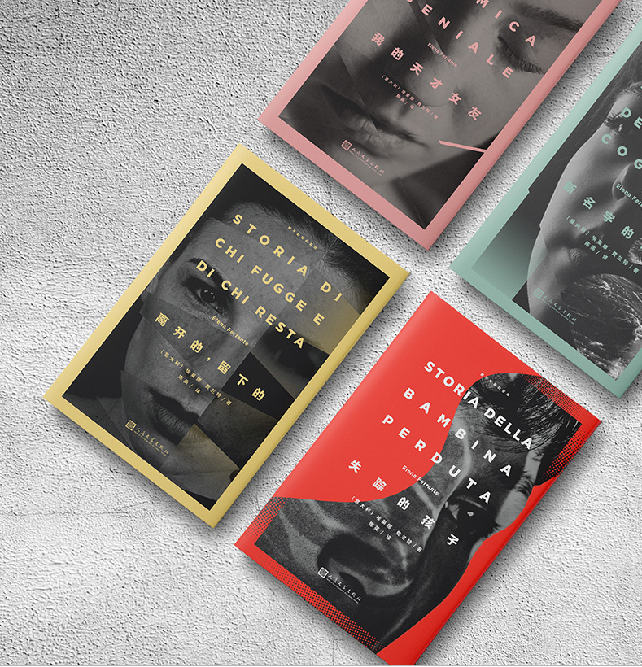
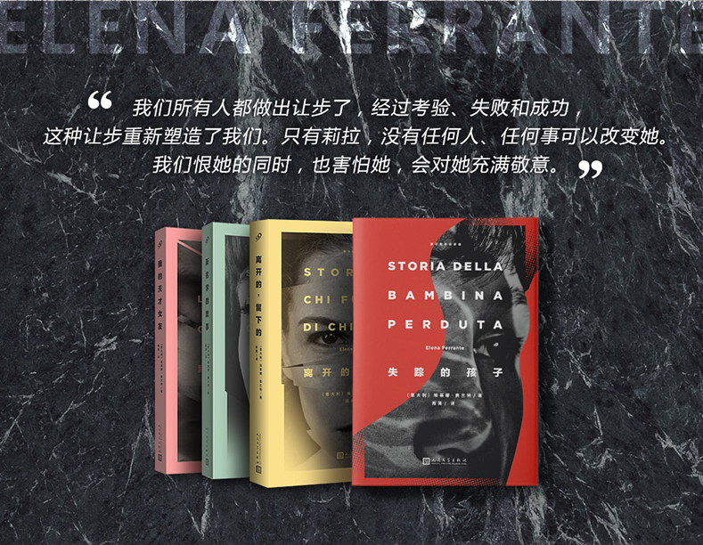
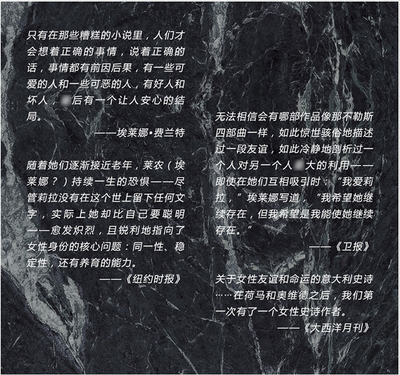

首页



Previous
Next
商品名称: 《我的天才女友》
价 格:￥33.20
商品类型：书籍
运费:包邮
库存：有货
1.此商品不支持7天无理由退货
2.此商品由 海囤全球 发货并提供售后服务
3.此商品不提供国内购物发票
4.此商品支持白条30天免息或分期支付，不可使用京豆、京东卡、京东E卡、余额支付，不支持货到付款
5.根据中国海关总署要求，您所购买的商品清关入境需要提供身份证信息进行入境申报，请您配合。我们不会向第三方泄露您的资料，请您放心
立即购买
加入购物车
详 情
内容简介: 只有你身为女人才会知道这些丑陋的秘密 两个女人，50年的友谊和战争 过去五年，几乎所有欧美读者都在谈论她、 畅销百万册 被翻译成28种语言 《金融时报》2015年度女性 2016《时代》周刊“世界Z有影响力的100人” 希拉里·克林顿、 乔纳森·弗兰岑、詹姆斯·伍德、扎迪·史密斯都是她的粉丝 《我的天才女友》是埃莱娜·费兰特“那不勒斯四部曲”的部，讲述了两个女主人公莉拉和埃莱娜的少女时代。故事一开始，已经功成名就的埃莱娜接到莉拉儿子里诺的电话，说他母彻底消失了。埃莱娜想起莉拉对自己命运的预言，于是她写下她们一生的故事…… 莉拉和埃莱娜一起成长于那不勒斯一个破败的社区，从小形影不离，彼此信赖，但又都视对方为自己隐秘的镜子，暗暗角力。 莉拉聪明，漂亮。她可以毫不畏惧地和欺凌自己的男生对质，也可以去找人人惧怕的阿奇勒﹒卡拉奇要回被他夺走的玩具；埃莱娜既羡慕莉拉的学习天赋和超人的决断力，又一直暗暗模仿莉拉。 家人不支持莉拉继续求学，因此她到父和兄长苦苦维持的修鞋店帮工，又面临几个纨绔子弟的追求。埃莱娜则怀着对朋友的关爱、嫉妒和理解，独自继续学业，却始终无法面对和莉拉竞争的失落。 终，十六岁的莉拉决定嫁给肉食店老板，但在婚宴上，她发现了丈夫的背叛。而埃莱娜也站在世界的入口，既为前途担忧，也因对思想前卫的尼诺产生朦胧好感而彷徨。
评 价
暂无评价